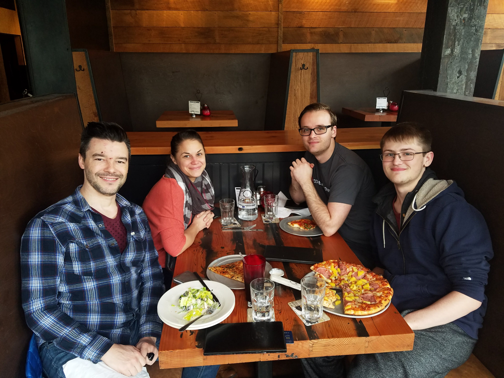

Mike Castor: Prior to launching a career as a software engineer, he spent 15 years as a technical recruiter specializing in finding software engineers for Fortune 500 companies like Facebook Inc. and Northrop Grumman. Most recently, he spent five years at Facebook's Seattle engineering site where he built a university recruiting program and managed a team of recruiters. As he makes the transition from recruiting professional to software engineer he continues to carry the values that he learned and thrived in during his time at Facebook including move fast, be bold and focus on impact. He's primarily interested in building exciting front end user experiences and telling stories with data.
Lacy Hogan: As a student at Code Fellows, she is studying to be a Full-Stack JavaScipt developer. Prior to beginning her new discipline, she was a contract specialist for over 14 years specializing in government contracts. She has performed this function in several capacities, supporting several agencies and organizations. Most recently, she supported the National Oceanic and Atmospheric Administration in Seattle, WA. She is presently a Master Sergeant in the US Air Force reserves. After she completes her education, she is interested in a career in front-end web developer, creating innovative and user-friendly products.
Daniel Shelton: After 6 years working on the business side of the medical field, he decided to change things up a bit by pursuing a new career in software development. Some of his most prominent strengths would be his leadership and collaboration skills which he acquired from work experience as a lead coder for a mid-sized medical practice. When he isn't currently programming he is either spending time with his wonderful daughter or out disc-golfing when the weather permits. His primary focus in software development is in the emerging market of mixed reality and VR technologies.
Michael Sklepowich: Currently a second-year biochemistry student at the University of Waterloo. He is a full-stack JavaScript student interested in becoming a back-end developer. He enrolled in Code Fellows after discovering his interest in data science working as a biomedical engineer last summer. After having created algorithms in Excel, he realized that learning to code was almost a necessity if he wanted to continue into data science. He plans to use the coding skills he's learned to be more productive at future positions after finishing university.
